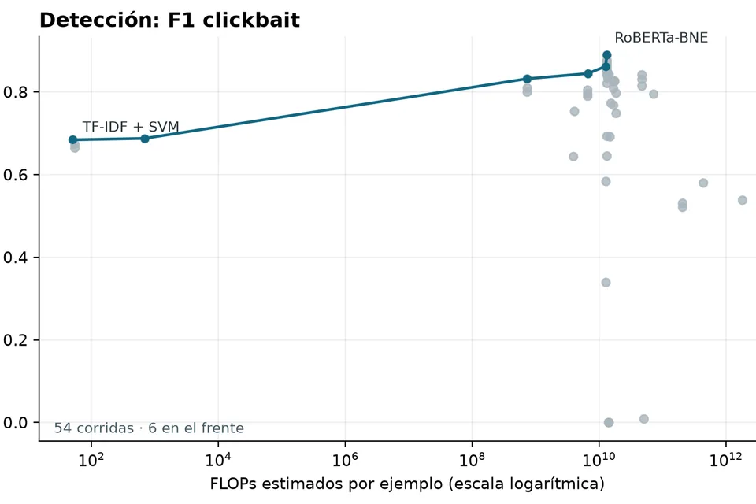
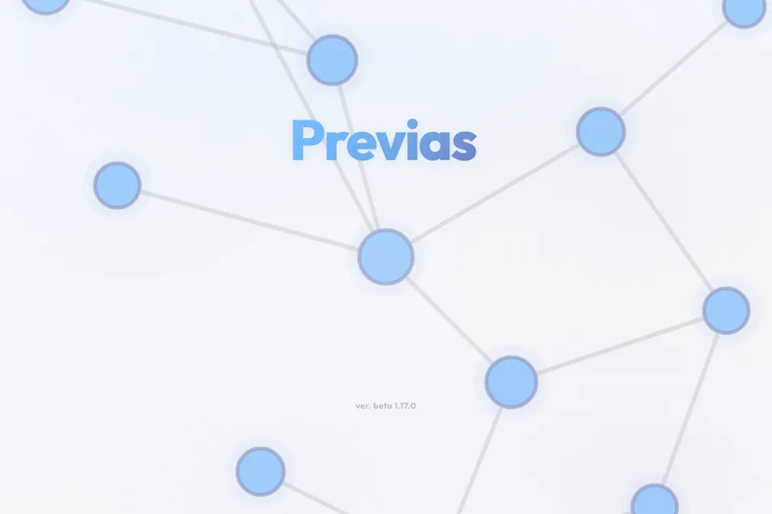
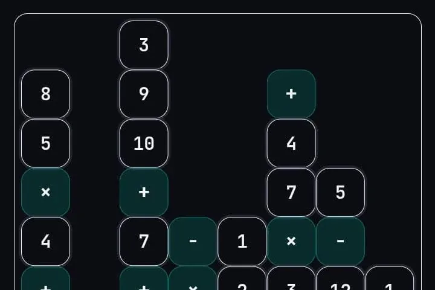

Agentes autónomos para problemas de lenguaje natural WIP
Se utiliza el problema del clickbait como caso de estudio. Tanto detección como spoiling.

Se utiliza el problema del clickbait como caso de estudio. Tanto detección como spoiling.

Un modelo que lee una nota con titular clickbait y escribe en pocas palabras lo que el titular esconde.

Buscar ecuaciones sencillas que implementen una función objetivo, en lugar de una caja negra muy compleja.

Una web que ordena las materias de la carrera en escalones según sus previas, muestra cuáles están habilitadas y lleva la cuenta de créditos por área (Disponible en Uruguay).

Un juego de Android: trazar un camino por una grilla de números y operaciones hasta que la cuenta dé exactamente 23.

Con datos de la Intendencia de Montevideo, los pasajeros del 21 Portones a las 18 h en 18 y Arenal Grande se aproximan con los autos que pasan por 18 de Julio en 30 segundos: p ≈ −0,8v2 + 10v + 16. Una idea parecida a la regla de Dolbear, que estima la temperatura contando el canto de los grillos.

Con la especie y tres medidas del cuerpo, una regresión lineal predice el peso de un pez con un error medio de alrededor del 7 %.

Diseños muestrales para estimar cuántos niños de 0 a 2 años hay en Colonia del Sacramento, con datos del Censo 2023.